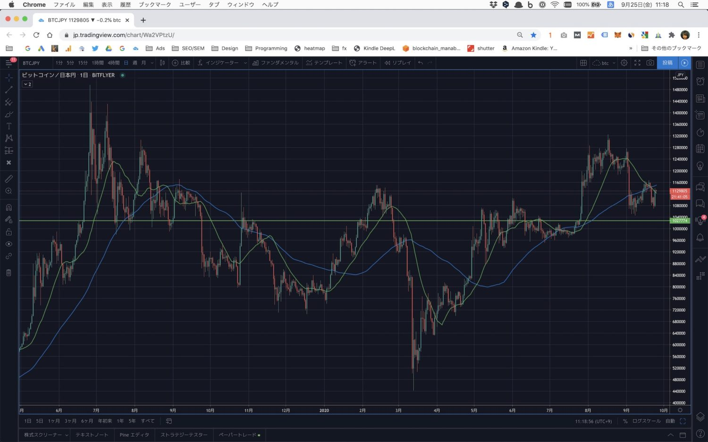

【シンプル】僕がFXを辞めた理由【結論：自分の適性を考えました】
こんにちは、マナブです。
資金が5,000万ほど貯まった時に、FXを始めました。
しかし、ざっくり25万円くらい損して、撤退しました。
さて、先日に下記のツイートをしました。
あ、そういえば「僕がFXを辞めた理由」でも解説しようかなと思います。
詳しくはブログなどに書きますが、簡単に言うと「上がるか、下がるか、分からないから」です。ビットコインとか株だと、長期保有したら勝てる見込みが高いので、わざわざ時間を割いてまで、FXをしなくていいと思った😌— マナブ@バンコク (@manabubannai) September 24, 2020
詳しくはブログなどに書きますが、簡単に言うと「上がるか、下がるか、分からないから」です。ビットコインとか株だと、長期保有したら勝てる見込みが高いので、わざわざ時間を割いてまで、FXをしなくていいと思った😌
上記を深堀りします。
いまは仮想通貨トレードを、楽しんでいます。
YouTube版も公開しています
動画で学びたい方は、YouTubeからどうぞ。聞き流しで理解できます。
僕がFXを辞めた理由【最適解じゃない】
{kind=link}
仮想通貨の方が、良い
スイマセン。これはあくまで「僕の持論」です。
なので、向き不向きとか、好き嫌いもあるはず。
まずFXに関して、僕はデイトレードをしていました。
ドル円、ユーロ円、ポンド円、オージー円、ポンドオージー、ユーロオージーなどを、取引していました。
結論：どっちに行くか謎
当たり前すぎるのですが、、、FXって「上がるか下がるか、謎」なんですよね。
なのでチャート分析しつつ、短期的な傾向を予想します。
結果は次のとおり。
僕は去年にFXを始め、辞めました😌
参考までに、勝敗データを公開します。200万円を軍資金にして、結果として「マイナス25万円」で撤退しました。ただ、データを見ると分かりますが、徐々に負けが減ってます。もうちょいやれば勝てたかもですが、仮想通貨と株に移行しました。理由はブログに書きます pic.twitter.com/ZLRfOW1aXk— マナブ@バンコク (@manabubannai) September 25, 2020
言い訳かもですが、徐々に「損失」が減っています。
なので、続けたら勝てたかもですね。
しかし、途中から「もういいや」という感じで辞めました。
そして今は、仮想通貨をメインにしています。
ビットコインは、普通に上がると思う
結論は下記のとおり。
結局のところ、大局観を見ることができると、ビジネスで強いですよね。
仮想通貨を例にすると、ぶっちゃけ僕は、投資して損する気がしないんですよね。あと音声メディアへの時間投資とかも、間違いないはず。トレンド発生のタイミングは謎ですが、大局観として間違いないので、安心して継続できる😌— マナブ@バンコク (@manabubannai) September 1, 2020
上記のとおりなのですが、僕はビジネスは得意です。
なので、年間で１〜２億くらいを稼いでいます。
そしてビジネスで稼ぐには、この「大局観」が必須だと思っています。
世の中の流れを考えて、その方向にベットするだけ。
仮想通貨に関しては、問題も多いですが、僕は「間違いなく、上がっていく」と思っています。
時間もかからないし、１日でトレードに使う時間は、たぶん５分以下です。
これなら、仕事にも集中できます。
株式投資も、ありだと思う
僕は仮想通貨がメインですが、株式投資もありだと思います。
現状はインデックス投資をしていますが、個別株に投資するなら、たぶん下記のあたりです。
- Apple → iPhone、Macが最高
- Amazon → プライム加入済み、海外でも商品が届く
- GMO → お名前ドットコムに依存してます
上記のとおり。
投資する理由は、僕が海外に住んでいても、こういった企業に依存しているからです。
商品の質も高いですし、企業としても大きい。
野心的なチャレンジもしていますし、たぶん「大局観で考えたときに、まぁ間違いないだろう」と思っています。
まぁ僕の投資経験は短いので、雑魚の思考です。
どの投資方法が、おすすめか
３種類の投資を紹介しました。
- FX
- 株式投資
- 仮想通貨
経験として、好きなものを選ぶのがいいと思います。
その際に大切なことは、自分の強みの明確化じゃないですかね。
僕の場合だと、強みは下記。
- ずっとガチホできる
- 仮想通貨の情報に詳しい
- 仮想通貨の価値観が好き
- IT業界で、８年ほど勤務
- 新しいテクノロジー好き
上記のとおり。
こういった性質を考慮すると、僕は「仮想通貨 or テック系企業への株式投資」だと思うんですよね。
なんとなくFXから始めたのですが、冷静に考えて、自分は違うなと思い、辞めました。
しかしFX口座にお金は残しているので、暇なときに遊ぶかもです。
FXをやってみて、完全に後悔ゼロな話
FXでは、25万円を失いました。大きなお金ですよね。
25万があれば、ハワイ旅行もできます。
{kind=link}
しかし、この25万の勉強代で、多くを学びました。
チャートが読めると、強い
僕のスキルなんて大したことないですが、チャート分析ができるようになったのは、大きな収穫です。

例えば上記の感じです。
{kind=link}
こういった思考は、FXや株トレードを経験しないと、わからないはず。
まだまだ未熟ですが、FXで学んだ知識は、その後に活きていると思います。
僕が負けを確信した日
実は、僕がFXで「こりゃ、、、勝てないな」と確信した日があります。
それが、こちらなんですよね。
僕が尊敬する「Akiさん」という億トレーダーなのですが、大きな損切りをしている動画です。
この動画を僕は見ていて、そして気づいたこと。
上記の事実です。
Akiさんは、まるで緊張ゼロの感じで、淡々と損切りしているんですよね。
これを見て、トッププレイヤーは強すぎ、、と思いました。
そして同時に、画面の向こうには、こういった億トレーダーがいて、FXではお互いに奪い合いですよね。
僕は、勝てないと確信しました。
アドレナリンが出るうちは、雑魚な話
ちょっとブログを例にします。
最近のブログ収益です😌
嬉しさの感情は消えました。ただの数字です。嬉しいと感じる状態では、勝ち上がれない世界かもです。感情がゼロになってから、新しい世界が見えるかもです pic.twitter.com/DrTamcy7Mr— マナブ@バンコク (@manabubannai) September 25, 2020
上記が結論なのですが、僕はブログで稼いでも、完全に「アドレナリンがゼロ」なんですよね。
これくらいにやり込んで、なにも感じなくなることが、大切かなと思いました。
しかし僕は、そこまで「FXにハマれなかった」というのも事実です。
チャートをずっと眺めていても、ぶっちゃけ「この時間はモッタイナイな」と感じてしまったので、とりあえず撤退して正解だったかもです。
仮想通貨は、とても楽しい
というわけで、現状は「仮想通貨トレード」を楽しんでいます。
トレードというか、ビットコインを買って、ガチホするくらいの投資です。
こういった感じで、僕は「ビジネスと投資の、相乗効果で稼ぎたい」という気持ちもあるので、仮想通貨は最高すぎます。
現状は「なんか怪しくて、危ないもの」と思われていますが、世界を変える可能性のあるテクノロジーです。
というわけで僕は、仮想通貨で遊びつつ、トレードしつつ、生きていきます。
P.S：普段の僕は「Twitter」を軸に発信しています。また最近は「Webマーケ教材」の作成に注力しており、ネットで稼ぐスキルを学べます。ブログの更新通知はtwitterからお知らせいたします。